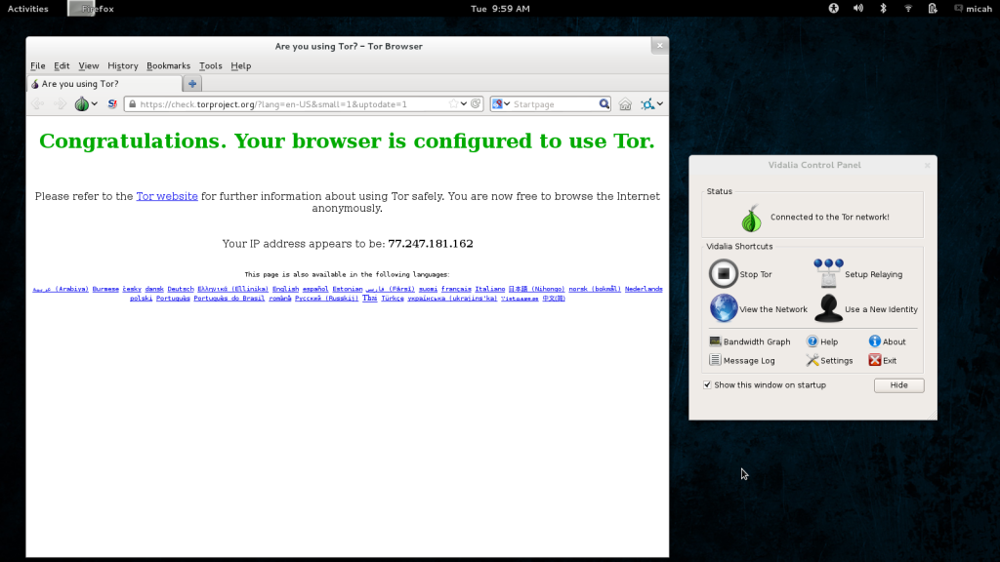
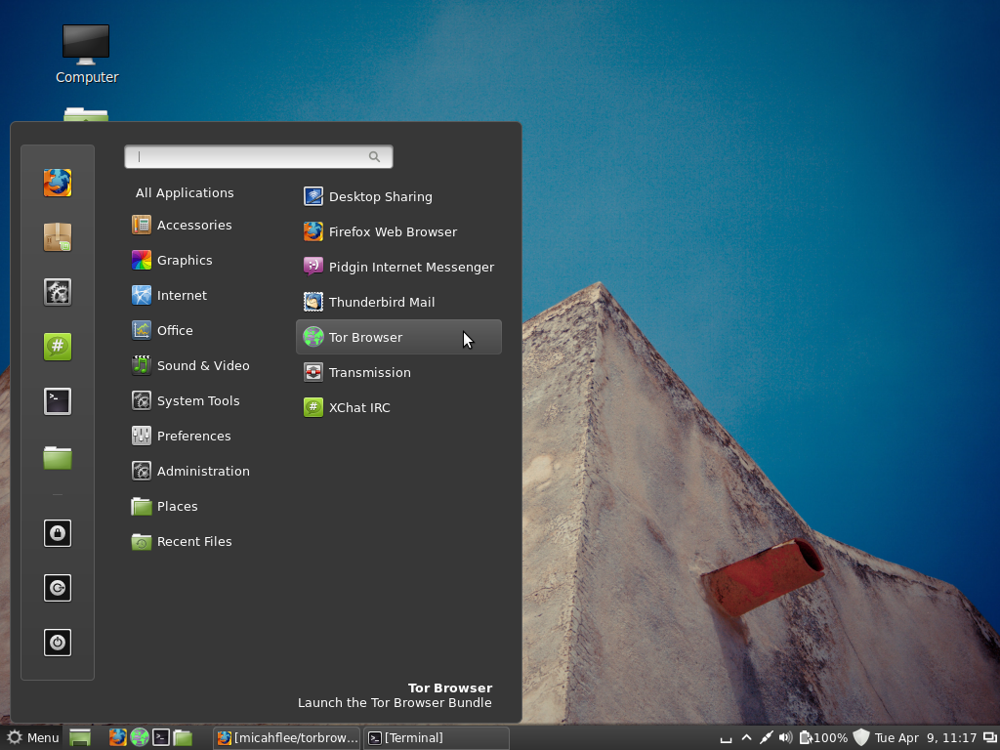
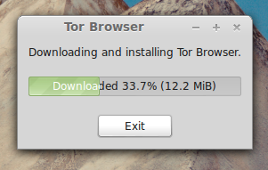
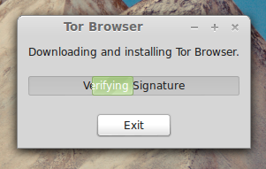
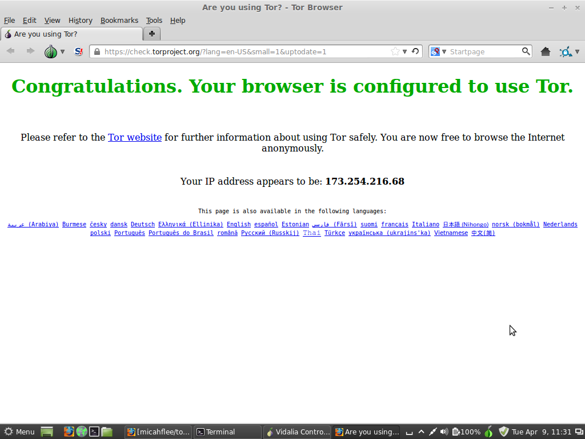
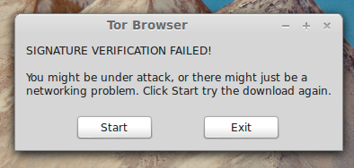

sudo apt-get install torbrowser
TL;DR: I wrote a piece of software called Tor Browser Launcher that downloads and auto-updates Tor Browser Bundle for you, in your language and for your architecture, and verifies signatures. I’d like help finding bugs before the initial release.
Over the years, Tor Project has done an amazing job at making Tor more user-friendly. In the past if you wanted anonymity you had to download and install Tor, maybe hand-edit your torrc file, and configure your browser to use a proxy server. You had to make sure that you didn’t have browser plugins like Flash or Java enabled that would compromise your anonymity. Eventually, this got easier when you could install the TorButton Firefox add-on, but even then you had to keep manually separate your own identity and your anonymous browsing.
Now all you have to do is head to torproject.org, click the large “Download Tor” button, and then download the Tor Browser Bundle (TBB). Then you extract it (normally to somewhere in your home directory, or to a USB stick) and run start-tor-browser, and wait to connect to the Tor network and for your anonymous browser to pop up with the friendly green “Congratulations. Your browser is configured to use Tor.” page.

Despite these advancements, Tor could still be more user-friendly.
If you want to install TBB for regular use on your computer, you don’t get a Tor Browser entry in your desktop environment’s menu system. You can’t easily add it to your Ubuntu Unity launcher, favorite it in GNOME 3, or stick it on a panel in Cinnamon or MATE (not to mention add it to your quick launch bar in Windows).
TBB doesn’t automatically update either. It warns you when you’re using an out-of-date version but you have to repeat the download and extract process manually. People often use Tor Browser infrequently enough to not bother with updating when they just want to quickly look something up anonymously, which compromises their security.
When users download TBB, Tor Project provides a GnuPG signature of the package, but roughly 0% of users, including the elitest of hackers, actually verify that signature to be sure they weren’t MitM’d during the download. All TBB downloads go over HTTPS (unlike some security tools), but there are still critical and widely publicized security problems with relying on the certificate authority infrastructure.
![GnuPG signatures][tbb_sig.png]
Finally, for GNU/Linux users, there’s no easy way to install TBB from the package manager, which is the preferred and expected way to install software on that platform. If it were installable from the package manager, it would open up the possibility for distributions to have Tor Browser installed by default.
These reasons are why I wrote Tor Browser Launcher. Check it out on GitHub.
Tor Browser Launcher is intended to make the Tor Browser Bundle (TBB) easier to maintain and use for GNU/Linux users. You install torbrowser-launcher from your distribution’s package manager and it handles everything else, including:
- Downloading the most recent version of TBB for you, in your language and for your architecture
- Automatically updating while saving your bookmarks and preferences
- Verifying the TBB’s GnuPG signature
- Adding a “Tor Browser” application launcher to your desktop environment’s menu
When you first launch Tor Browser Launcher, it will download TBB from https://www.torproject.org/ and extract it in ~/.torproject, and then execute it. When you run it after that it will just execute TBB.
I’m hoping to first get Tor Browser Launcher into Tor Project’s deb.torproject.org repository, and then later into Debian and Ubuntu, and other distributions as well like Fedora and Arch. I want Tor Browser Launcher to become the preferred way for GNU/Linux users to get TBB.
Eventually I’d also like to port Tor Browser Launcher to Windows and Mac OS X.
When you install Tor Browser Launcher, it adds a “Tor Browser” item to your desktop environment’s menu in the Internet category:

The first time you run it, or when it finds updates, it downloads TBB from https://www.torproject.org/, and it also verifies the GnuPG signature:


On success, it runs start-tor-browser, which loads Vidalia and Firefox. If you already have TBB installed, it immediately runs start-tor-browser:

If the GnuPG signature doesn’t check out, it throws an error:

I’d like your help. I think Tor Browser Launcher is about ready for it’s first release. I’m already working on getting it into deb.torproject.org, but first I want to find and fix any final bugs. Can you install it, try using it, and if you find anything wrong open a new issue on GitHub?
If you’re using Debian, Ubuntu, Mint, or a related distro, it’s easy to build a .deb from source and install it. First install git, python-stdeb, and all of the Tor Browser Launcher dependencies:
sudo apt-get install git python-stdeb python-gtk2 python-psutil python-twisted wmctrl gnupg
Then git clone it, and build and install the .deb:
git clone https://github.com/micahflee/torbrowser-launcher.git
cd torbrowser-launcher
./build_and_install.sh
After typing your password to install the .deb, you’re done. You should now have a “Tor Browser” menu item. If you want to see debugging information, run torbrowser-launcher from a terminal.
To see the discussion with the community that lead to this, check the comments on these two bugs: #3994 and #5236. Also, some discussion happened on the tor-talk and tor-dev mailing lists.
I also want to point out that Jamie Nguyen has successfully packaged Tor Browser for Fedora, though it’s not in the official repos. His solution doesn’t technically use TBB, but is still clever. I prefer Tor Browser Launcher though because it’s much less work to maintain (no need to update it each time there’s a TBB release), and if it ends up in distros that are slow to provide new versions of software (like Debian stable) users will still get the latest and greatest TBB.


Legacy comments, imported from previous version of this blog:
The Knight
June 19, 2013 02:24 PM
Thank you ever-so much for writing this.
Its both awesome & slightly sad that you implemented this idea before either Debian or Tor devs, but hopefully now that its out there it will be easier to convince both of them to move it upstream. Thanks again.
georg
April 7, 2017 09:14 AM
Hi Micah, This is great stuff, but unfortunately at the last step I've got an issue. Here ist the original note by my system (raspberry pi 2 running an ubuntu mate 16.04 lts, german localization): sudo apt-get install build-essential dh-python python-all python-stdeb python-gtk2 python-twisted python-lzma python-txsocksx gnupg fakeroot xz-utils tor gpg [sudo] password for georg: Paketlisten werden gelesen... Fertig Abhängigkeitsbaum wird aufgebaut.
Statusinformationen werden eingelesen.... Fertig Paket gpg ist nicht verfügbar, wird aber von einem anderen Paket referenziert. Das kann heißen, dass das Paket fehlt, dass es abgelöst wurde oder nur aus einer anderen Quelle verfügbar ist.
E: Für Paket »gpg« existiert kein Installationskandidat.
Result is, that there is no installation candidate for gpg. Do you have any idea, what I've done to fail?
Best regards Georg
Rommel Anatoli Quintanilla Cruz
June 7, 2013 10:04 AM
Nice work, thank you! =)
bighornram
May 27, 2014 04:58 PM
I installed torbrowser onto Jessie/testing amd64. Your instructions were clear and easy to follow. The package built just as you said. I think it is a great tool.
isaac
February 7, 2015 12:55 PM
260Mb, don't think it'll fit on the phone, trying it right now. Is there another way? have Debian installed but having trouble with installing Tor.
Tiger-222
April 10, 2013 04:46 AM
Nice shot! I also want to notice that on Debian GNU/Linux wheezy, I need to manualy install python-all (using aptitude or apt-get) and need to modify torbrowser-launcher on line 194 to specify 'en-US' as other locales are still not supported (as of now only en-us build is available since april 2nd). Moreother, idealy, the package and signature should be pushed on the same day: for the latest release, the package was pushed on apri 2nd and the sig on april 5th.
Great project :)
micah
April 10, 2013 10:11 AM
Thanks! I opened a ticket: https://github.com/micahflee/torbrowser-launcher/issues/27 :)
slippery
January 13, 2014 01:52 PM
Just wanted to point out that when I tried to build the launcher there were two dependencies missing: python-game and python-lzma from these instructions. Package manager wouldn't let me install them but "apt-get -f install" fixed it and I was able to complete the build process.
Cool idea, looking forward to testing it.
bert
September 29, 2018 11:31 AM
signature error ,3 times after downloading ,right near the end when the download is almost done.
nllz
March 11, 2014 07:44 AM
Some dependency issues in Debian that I did not encounter before. This is not fixed with sudo apt-get -f install because python-parsley and python-txsocksx are not in the repos.
dpkg: dependency problems prevent configuration of torbrowser-launcher: torbrowser-launcher depends on python-parsley; however: Package python-parsley is not installed. torbrowser-launcher depends on python-txsocksx; however: Package python-txsocksx is not installed.
dpkg: error processing torbrowser-launcher (--install): dependency problems - leaving unconfigured Processing triggers for desktop-file-utils ... Processing triggers for gnome-menus ... Errors were encountered while processing:
micah
March 11, 2014 02:19 PM
Oops, sorry about that. I used to bundle those two python modules in with the source code, but in version 0.0.7 I updated them to be package dependencies in order to get TBL packaged in debian: https://ftp-master.debian.org/new/torbrowser-launcher_0.0.7-1.html
What version of debian are you using? I'm running sid, so I actually didn't check to see if these packages were available in wheezy.
Glenn
April 8, 2016 12:55 PM
Dear Micah,
AWESOME!!!!! RPI3 is out!
I think it should be possible to compile and run Tor Browser bundle for RPI2 or Rpi3.
For those with the skills to do so Could you please Detail what commands would be necessary to make this happen in ANY Distro That will run in RPI3 and OR RPI2?
How long should it take to compile and run? I think I heard that the compiler must also be compiled for these computers. Anyway, I would still be happy to donate an RPI2 and/or RPI3 for this.
Citizen
December 2, 2015 03:15 PM
Thanks for the project. At this moment, after installing it the first time, it tries to download "https://dist.torproject.org/torbrowser/5.5a4-hardened/tor-browser-linux64-5.5a4-hardened_en-US.tar.xz". It fails with 404, I suppose "https://dist.torproject.org/torbrowser/5.5a4-hardened/tor-browser-linux64-5.5a4-hardened_ALL.tar.xz" is what it should download instead.
Also, I would really prefer everything in one folder, the bin, config, cache and all. Maybe even in one user-definable folder?
Radix
June 21, 2013 02:34 PM
Installed fine, but currently getting "404 not found" when it tries to download TBB. Tried a mirror or two with same results.
Curiously, was not asked for a password when I installed it. Maybe related?
micah
June 21, 2013 02:49 PM
This is related to this bug https://github.com/micahflee/torbrowser-launcher/issues/49 -- hopefully there will be a fix soon. But in the meantime you can use stable TBB instead of alpha, and that should work fine.
Glenn
May 1, 2015 02:54 PM
Could you add the missing txsocks and parsley to the raspbian distro and get it to run on a raspberry pi? Or a workaround? I have a raspberry pi2 with arm7 quad processor (some raspberry pi's use arm6 single core) I would gladly provide a rpi2 you to try it out on! (They cost $35 and come without case, powersupply, Micro SD 8+GB card class 4 or 6, keyboard, and mouse. From Raspberry PI)
I am not skilled enough to figure where things need to go. I am not skilled enough to edit your Launcher to make it work. I am not skilled enough to build a working distro. I am not skilled enough to add TBB to the NOOBS. I tried unsucdessfully to put txsocksx and parsley into my raspbian computer but failed likely wrong location or ... ....?????
Thanks in advance.
Md. Ariful Islam Arif
July 17, 2014 10:59 PM
After installation "The Tor Browser Bundle should not be run as root." Please help me.
RB
March 4, 2017 04:53 PM
I'm getting a failed certificate warning every time your app tries to download and install Tor Browser, on two different machines. Both are running Ubuntu 16.04 LTS 64-bit.
I am able to run the manually downloaded Tor Browser from its extracted folder, located in my Downloads folder, and it runs fine as a "portable app", but it doesn't create any launchers for Unity, and its a pain in the butt to manually create them. I am looking to install Onionshare also. As you know, downloading Onionshare from the repositories includes your app, which creates the launchers and downloads Tor Browser as well, but fails with a bad certificate error every time, for me.
Love the concept of your app, and is the way Tor Browser and Onionshare installs should be implemented in the first place, but its just not working out for me, after repeated attempts.
Can you help a brother out?
anonymous
September 7, 2013 12:18 PM
I just wanted to let you know that this piece of software works great for me. This is a wonderful solution.
Jorge Maldonado Ventura
March 19, 2017 04:06 PM
Nice project. I wrote an article in Spanish for my website describing your project and how to use it: https://micahflee.com/pgp.asc
Alan
December 4, 2016 03:00 PM
Hi. I am curious as to why TOR is not in the repositories, or through the package manager? Surely there are enough people in the Linux community interested in not contributing to the general collection of people's data. Message to Linux community. Please, please put TOR in the repositories. 2016 Still hoping. :)
Glenn
August 14, 2015 10:58 AM
yeMicah I have access to all of the OSes in berryboot and in noobs. I have been trying for several months to get tbb (tor btrowser bundle) to work thru any means I can try. My method is usually to cut and paste into whatever seems to be the correct place in the OS's terminal often having to use sudo in front of the command to make it work. I am not verry good with linux YET! But i am very determined to communicate without big brother simply because big brother is ILLEGAL & WRONG!
i am wondering if you would consider accepting a gift of a raspberry PI 2 B from me to make tor work for all raspberry users. These things come ala-carte. (It would likely be less costly than the gas I have invested in trying to figure out how to get TOR on my raspberry pi 2.) I live near MCM electronics and could have them send it you.
other things that you would need might be include a case (Optional) a usb mouse & keyboard a micro usb power supply
a micro SD card (perhapse class 4 due to backward compatibility issues.) Either NOOBS or raspiboot or if you can tell me how to get debian on either system please tell me. a monitor with a hdmi input.ystem an internet connection with an rj45 connector. I will be glad to get in further touch with you. I think you should have my email
Micah Lee
August 17, 2015 11:40 AM
Hey Glenn, that's a very nice offer, but unfortunately there isn't a lot that I can do to make Tor Browser work on a Raspberry Pi. The problem is that Raspberry Pis have ARM processor, and Tor Project only releases binaries of Tor Browser for x86 and x86_64 processors for Linux. If Tor Project starts releasing ARM versions of Tor Browser, then it will be trivial to patch Tor Browser Launcher to make it support downloading and installing those packages too.
So your best bet is to convince Tor to work on this. It looks like there's already an open ticket: https://trac.torproject.org/projects/tor/ticket/12631
milhouse
November 27, 2014 04:41 AM
When do you expect to get TBL into Ubuntu/Mint's repository? It would be great that even newbies (like me) could install it. :)
screamindynomit
June 27, 2015 09:18 PM
./build_and_install.sh dosnt work on raspberry pi raspbian pleasefix?